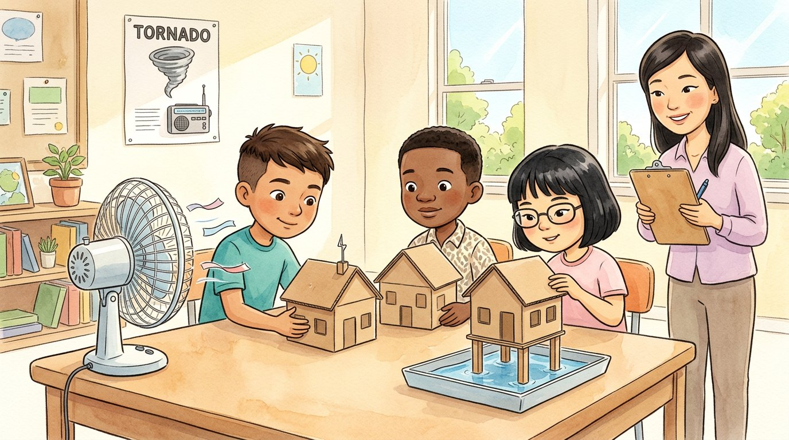

3er grado · Ciencias · 3-ESS3-1
La casa que aguantó el viento
Un cuento sobre cómo protegernos de las tormentas.
Palabras de ciencia que vas a aprender
Toca una palabra verde para ver qué significa.
El cuento
Un martes, sonó la alarma en la escuela de Israel. No era un incendio: era un simulacro de . Todos caminaron en orden al pasillo interior, lejos de las ventanas, y se agacharon cubriéndose la cabeza.
—En Illinois puede haber tornados en primavera y verano —explicó la señora Kim—. Un tornado es una columna de viento que gira muy rápido. Es un del tiempo. Por eso practicamos dónde ir.
—Nadie puede impedir una tormenta —dijo la maestra—, pero sí podemos el daño que causa. Hoy ustedes serán ingenieros.
Cada equipo eligió un peligro y diseñó una solución. Para probarlas, construyeron un : una casita de cartón pequeña que representaba una casa de verdad.
El equipo de Israel pensó en los tornados y el viento fuerte. Le pusieron a su casita un techo bien amarrado y paredes reforzadas, y construyeron un en el sótano: un cuarto pequeño y seguro, sin ventanas.
El equipo de Mei pensó en los rayos. Pusieron en el techo un : una barra de metal que lleva la electricidad del rayo hasta la tierra, para que no dañe la casa.
El equipo de Jamal pensó en las , como las que pasan a veces en Texas, donde vive Alejandro. Pusieron su casita sobre patas, más alta que el agua, y la rodearon con un muro de bolsas de arena.
Luego vino la prueba: un ventilador para el viento y una charola con agua para la inundación. La casita de Israel perdió una ventana, así que el equipo la mejoró con una persiana y la volvió a probar. ¡Esta vez aguantó!
Esa noche, Israel le contó todo a su familia. Juntos revisaron la radio del tiempo y prepararon una mochila con linterna, agua y pilas. —Así estamos listos —dijo Israel—, aunque ojalá no la necesitemos.
Glosario
- peligro
- Algo que puede hacer daño a las personas o a las cosas.
- tornado
- Una columna de viento que gira muy rápido y baja de una nube de tormenta hasta el suelo.
- inundación
- Cuando el agua cubre un lugar que normalmente está seco, por mucha lluvia o porque un río se desborda.
- pararrayos
- Una barra de metal en lo alto de un edificio que lleva la electricidad de los rayos hasta la tierra.
- refugio
- Un lugar seguro para protegerse de un peligro.
- modelo
- Una copia pequeña de algo que sirve para estudiarlo o probarlo.
- reducir
- Hacer que algo sea menor o menos fuerte.
Preguntas
Elige la respuesta correcta. Si te equivocas, el cuento te muestra dónde está la respuesta.
-
Pregunta A. ¿Qué es un tornado?
Un tornado es una columna de viento que gira muy rápido; es un peligro del tiempo.
-
Pregunta B. ¿Qué podemos hacer frente a las tormentas?
Nadie puede impedir una tormenta, pero sí podemos reducir el daño que causa.
-
Pregunta C. ¿Qué construyó el equipo de Israel contra los tornados?
El equipo de Israel reforzó la casita y construyó un refugio en el sótano, sin ventanas.
-
Pregunta D. ¿Para qué sirve un pararrayos?
El pararrayos lleva la electricidad del rayo hasta la tierra, para que no dañe la casa.
-
Pregunta E. ¿Cómo protegió el equipo de Jamal su casita de las inundaciones?
Pusieron la casita sobre patas, más alta que el agua, y la rodearon con bolsas de arena.